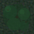
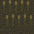
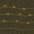
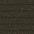
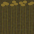
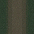
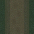

Branch: atlas/graphics-lab · Review page for style-matched art options
1. Resource Tiles — Timber
Goal: read as forest/trees, not just dark green ground. Current tile is subtle noise + 2 dark circles.
Current (baseline)
Options

At game scale (~35px)
2. Resource Tiles — Stone
Goal: read as quarry/rock outcrop, not just gray-tinted ground. Current tile is noise + 2 small rectangles.
Current (baseline)
Options
At game scale (~35px)
3. Resource Tiles — Grain
Goal: read as farmable field / grain area. Current tile is noise + 2 thin vertical lines.
Current (baseline)
Options




At game scale (~35px)
4. Resource Tiles — Clay
Goal: read as clay/earth deposit. Current tile is noise + 1 faint ellipse.
Current (baseline)
Options
At game scale (~35px)
5. Road Styles
Goal: primitive / ancient / theme-appropriate instead of modern highway. Current road is solid gray #525558 with yellow centerline marks.
Current (baseline)
Options


At game scale (~35px)
6. Walker Styles — Job Identity
CSS-only walker variants. Each uses the game's head (::before) + body (::after) anatomy at 2.5x scale for review. Colors tuned to match industry palette from ART_DIRECTION.md.
Citizen / Resident
Timber Worker
Sawmill Worker
Stone Worker
Mason Worker
Clay Worker
Grain / Farm Worker
Fisher
Brewer
7. All Walkers Side-by-Side (Job Differentiation Test)
Can you tell them apart at a glance? All walker types next to each other on a road background.